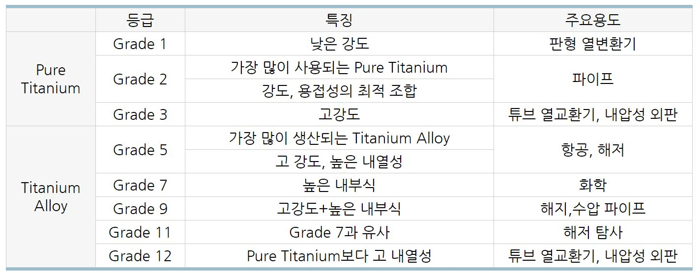

Ref : https://www.aubertduval.com/alloy/754/
http://www.hsic.co.kr/board/Mboard.asp?Action=view&strBoardID=pds_board&intSeq=12
TA6V : Ti-6Al-4V (Al 6%, Vanadium 4% ...)

Grade 23 also known as Ti-6Al-4V-ELI or TAV-ELI
ELI stands for Extra Low Interstitial. Reduced interstitial elements oxygen and iron improve ductility and fracture toughness with some reduction in strength. TAV-ELI is the most commonly used medical implant-grade titanium alloy.
α-β 합금
α 형과 β 형의 특징을 겸비하도록 열처리 조건에 의해서 재료 특성을 조절할 수 있다. Ti-6Al-4V 합금이 대표적인 합금이다.
강도는 122 ~ 97kgf/㎟ 정도이고 높은 인성을 가지며, 소성 가공성, 용접성, 주조성도 좋아서 사용하기 쉽고 신뢰성이 큰 합금이다.
가장 널리 사용되는 합금이다.
β 합금
β 형 합금은 V, Mo 등의 β 안정화 원소가 다량으로 첨가되는 합금으로 용체화 처리와 시효에 의해 130 kgf/㎟을 넘는 고강도를 얻을 수 있는 특징이 있다. 용접은 가능하지만 용접시에는 모재와 동등한 강도를 얻을 수는 없다.